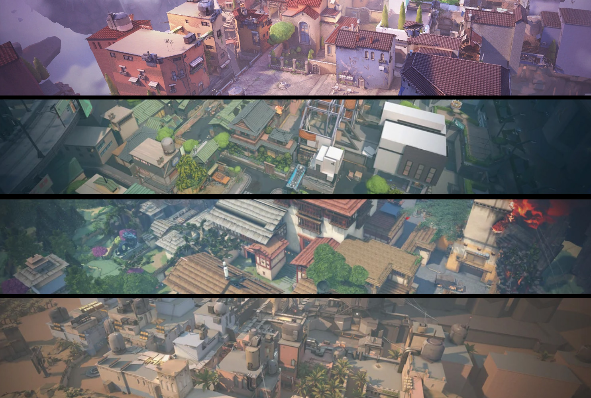

Valorant es un videojuego de disparos en primera persona multijugador gratuito desarrollado y publicado por
Riot Games.
El juego se anunció por primera vez con el nombre en clave Project A en octubre de 2019. Fue lanzado para
Microsoft
Windows el 2 de junio de 2020. Tuvo una beta cerrada que fue lanzada el 7 de abril de 2020.
DESAFIAD LOS LÍMITES
VALORANT es el escenario competitivo global que buscáis. Se trata de un shooter táctico 5v5. Vuestra misión
es colocar o
desactivar la Spike en una serie de rondas en las que solo contaréis con una vida en cada una. La victoria
se la lleva
el primer equipo que gane 13 rondas. Aparte de las armas y las balas, tendréis a un agente con habilidades
letales,
adaptables y ágiles que os brindarán oportunidades para demostrar vuestro dominio de las armas.
La creatividad es el arma más poderosa.
Jugabilidad
Valorant es un videojuego de disparos táctico en equipo y en primera persona ambientado en un futuro
próximo.
Los jugadores asumen el control de agentes, personajes que provienen de una gran cantidad de países y
culturas de todo
el mundo. En el modo de juego principal, los jugadores se unen al equipo atacante o defensor con cada equipo
que tiene
cinco jugadores. Los agentes tienen habilidades únicas y usan un sistema económico para comprar sus
habilidades y armas.
El videojuego tiene una variedad de armas que incluyen pistolas, subfusiles, escopetas, ametralladoras,
fusiles de
asalto y fusiles de francotirador.Cada arma tiene un patrón de retroceso que debe ser controlado por el
jugador
para poder disparar con precisión. El equipo atacante tiene una bomba, llamada Spike, que necesitan plantar
en un sitio.
Si el equipo atacante protege con éxito la Spike y detona, obtendrán un punto. Si el equipo defensor
desactiva con éxito
la Spike, o el temporizador de la ronda de 100 segundos expira, el equipo defensor obtiene un punto. Si se
eliminan
todos los miembros de un equipo, el equipo contrario gana un punto. Después de doce rondas, el equipo
atacante cambia al
equipo defensor y viceversa. El primer equipo en ganar al mejor de 24 rondas gana la partida.
Un patio abierto para pequeños combates de posicionamiento y desgaste divide las dos ubicaciones de Ascent.
Cada una de
ellas puede fortificarse con unas puertas a prueba de bombas. Tendréis que destruirlas o buscar otro camino.
La cuestión
es no ceder ni un centímetro.
Split
Para llegar lejos, hay que ascender. Dos ubicaciones separadas por un centro elevado que dispone de dos
zonas de
cuerdas
para facilitar el movimiento. Cada una de las ubicaciones cuenta con una gran torre esencial para hacerse
con el
control. No perdáis de vista estas zonas antes de que salten por los aires.
Haven
Bajo un monasterio olvidado, retumba el clamor de agentes rivales que luchan por controlar tres ubicaciones
distintas.
Hay más territorio que en otros mapas, pero los defensores pueden aprovecharlo para avanzar de forma
agresiva y
flanquear.
Bind
Dos ubicaciones sin zona central. Derecha o izquierda, ¿por cuál os decantaréis? Ambas disponen de caminos
directos para
los atacantes y dos teleportadores unidireccionales que facilitan los flanqueos.

SISTEMA ANTITRAMPAS DE VALORANT: INFORMES DE TRAMPOSOS
¡Hola! Soy Paul "Arkem" Chamberlain, el jefe del equipo antitrampas de VALORANT, y vuelvo para explicaros
brevemente la
importancia de los informes de jugadores.
Una de las herramientas más potentes en nuestra lucha contra los tramposos son vuestros informes. Los
informes ofrecen a
los jugadores la oportunidad de contarnos directamente qué actividades sospechosas han detectado en sus
partidas. Al
contrario que los sistemas automatizados de Vanguard (nuestro sistema antitrampas), los informes nos aportan
una
perspectiva humana de una dimensión que no conseguiríamos alcanzar con ningún otro método y nos permiten
hacernos una
idea general de la experiencia de todos nuestros jugadores en partida. Es muy importante que
utilicéis la
herramienta de
informes en partida siempre que veáis algo sospechoso, pues esa es la mejor forma de mantener la
justicia en
el juego.
Os prometo que al final de este artículo os daré unas cuantas cifras interesantes.
EL CICLO DE VIDA DE LOS INFORMES
Los informes forman parte de muchos de los procesos tanto automatizados como manuales de nuestro equipo. En
lo que
respecta a las cuestiones automatizadas, Vanguard se sirve de ellos para decidir si es necesario examinar a
un jugador
en concreto más de cerca (por ejemplo, haciendo un análisis más a conciencia de su integridad en partida).
Además,
Vanguard también contempla el número de informes (en concreto, los que pertenecen a jugadores distintos y la
cantidad de
partidas en las que se informa sobre cierto jugador) para determinar el nivel de confianza que deposita en
sus
hallazgos. Eso nos ayuda a bloquear a los jugadores más rápido y, en muchas ocasiones, sin necesidad de
revisar el caso
manualmente.
Además, nuestros analistas antitrampas también usan los informes para encaminar el proceso de revisiones
manuales. Todos
los días, los analistas (a veces yo también hago esta parte) revisan a los jugadores sospechosos, y suelen
empezar por
los que más informes hayan recibido. Estas revisiones manuales nos ayudan a dar con trampas que no se
detectan de forma
automática, y luego empleamos esta información para mejorar la detección automática y la administración de
suspensiones
de Vanguard de cara al futuro. Además, las revisiones manuales también nos brindan la oportunidad de
adelantar las
suspensiones de los jugadores más problemáticos. Solemos utilizar "oleadas de suspensiones" para que los
desarrolladores
de programas de trampas no sepan a ciencia cierta si ya hemos conseguido detectar sus programas, pero
aprovechamos para
deshacernos de los tramposos más molestos lo antes posible y así proteger mejor el juego.
Finalmente, utilizamos los informes para determinar la salud del juego y la efectividad de Vanguard. Si la
cifra total
de informes aumenta, es una señal de que los jugadores no están satisfechos con la integridad del juego (al
margen de la
precisión de cada informe de forma individual). De la misma forma, comparar el porcentaje de jugadores que
han recibido
informes por hacer trampas con la cantidad de detecciones de Vanguard nos sirve para evaluar la calidad del
sistema
antitrampas.
CUESTIÓN DE CIFRAS
Sé que os encantan las estadísticas, así que le he pedido a nuestros amigos del equipo de gestión de datos
que me pasen
unas cuantas cifras interesantes para compartir con vosotros.
En primer lugar, sabed que el 97 % de los jugadores nunca han recibido un informe; es
decir, nadie ha considerado que su
comportamiento era sospechoso o digno de destacar. Del 3 % restante de los jugadores que han sido acusados
de hacer
trampas, más del 80 % solo han recibido un informe de un jugador. El 90 % han recibido menos de tres
informes de
jugadores distintos.
Miradlo así: solo el 0,6 % de los jugadores ha recibido más de un informe por hacer trampas y solo
el 0,3 % ha recibido
tres o más. No obstante, la correlación entre los informes y los tramposos no es perfecta: muchos
jugadores que reciben
informes son inocentes, y no todos los tramposos reciben algún informe antes de que los bloqueemos. Ahora
mismo, solo el
53 % de los jugadores suspendidos por hacer trampas recibieron algún informe antes de que suspendiéramos
su
cuenta y
solo el 60 % de los jugadores con 20 informes acaban recibiendo un bloqueo tras el proceso de
revisión.
Contenido Adicional
Aqui te explicamos de forma detallada los agentes y sus habilidades con nuestro creador de contenido
Black
Aqui te explicamos de forma detallada las armas y sus skins con nuestro creador de contenido
Black